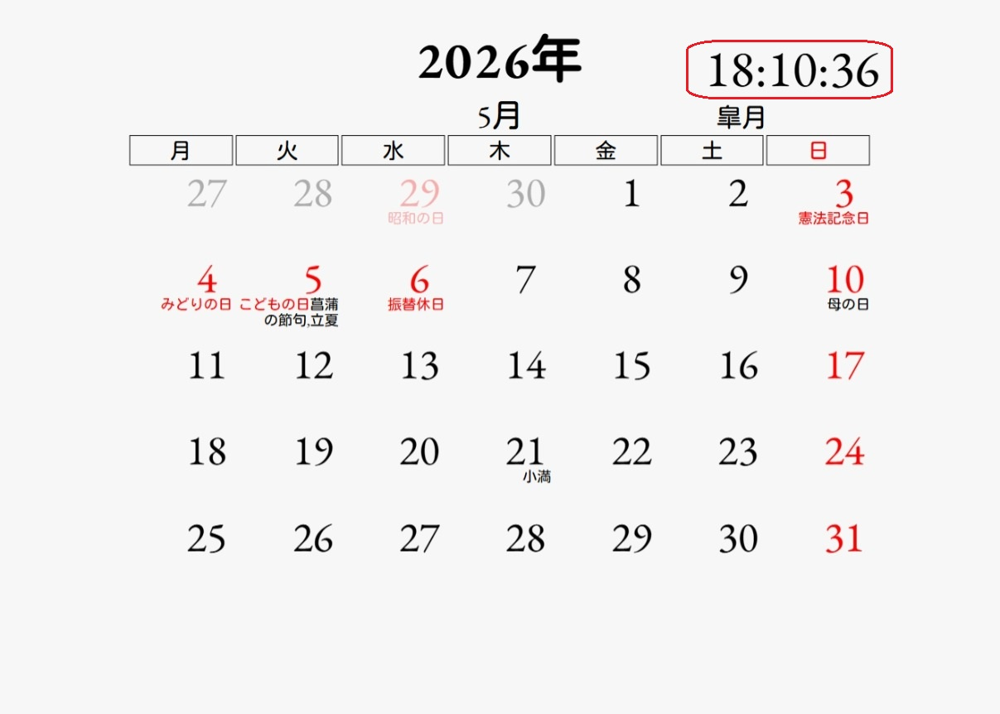
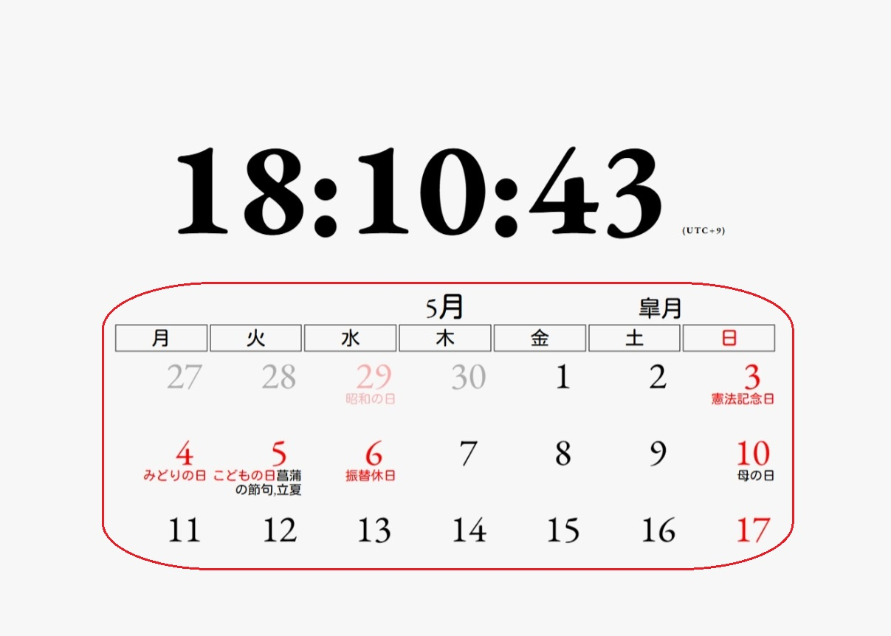
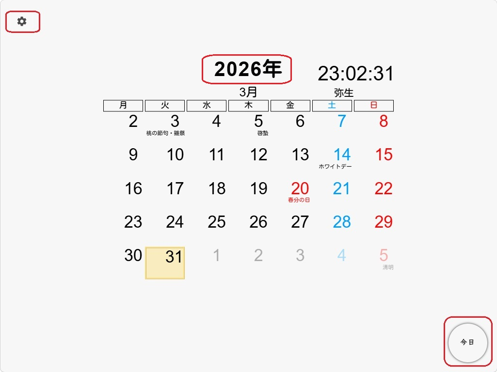
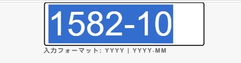
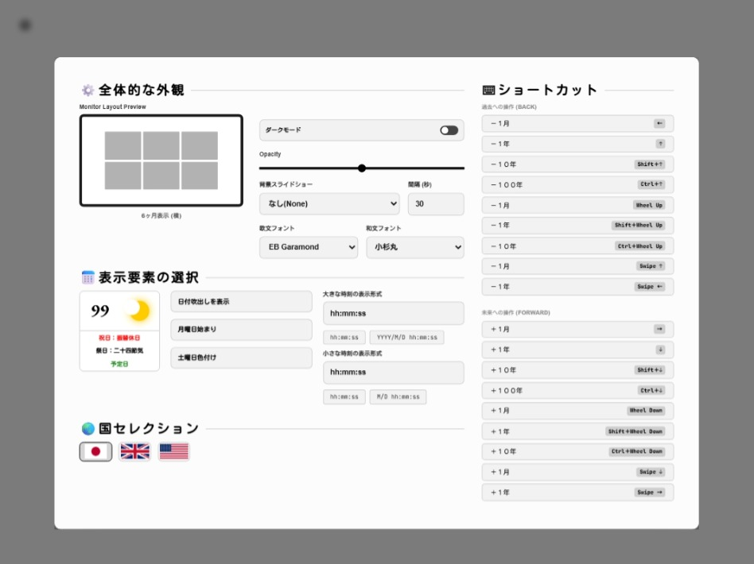

使い方
動かしてみよう
Demoウィンドウを起動
直感的なインターフェースを体験できます。
URLの説明
file:///D:/Calendar/gallery-design-1-UI-1.html?idbnoop=true
No Operation モード CONFIG
パラメータ idbnoop=true が指定された場合、カレンダーアプリは No Operation として動作します。 この状態では IndexedDB からの設定読み込み、および新規設定の保存は行われません。
全画面表示にすると、
画面がすっきりして、カレンダーを
より快適にお使いいただけます。
ショートカット： F11 で全画面のオン／オフを切り替えられます。
画面の説明と設定


1時刻クリック
時刻が大きく表示されます。時刻は選んだ地域の現在時刻です。
2カレンダークリック
カレンダーが大きく表示されます。

3システムの設定メニュー
画面左上の歯車アイコンは、一般的にアプリやシステムの設定メニューを開くボタンです。 画面の左上にマウスカーソルを近づけたときに表示されます。
4年月の指定
クリック・ツー・エディット (Click-to-Edit)で表示する年月を指定できます。年のラベルは通常時は入力欄を隠しておき、マウスクリックした時だけ編集モードに切り替ります。

5今日のカレンダー表示ボタン
クリックするとこで、今日のカレンダーを表示します。画面の左上にマウスカーソルを近づけたときに表示されます。

6全体的な外観
カレンダーの雰囲気を左右する基本設定を行えます。レイアウト、テーマカラー（ダークモード）、 背景スライドショー、フォントを自由に組み合わせて、好みのスタイルに整えられます。
7表示要素の選択
日付まわりの情報量や見え方を自由に調整できます。 月齢、祝日、予定の表示、週の開始曜日、 土曜の色付け、時刻形式など、 カレンダーの読みやすさに関わる要素を細かくカスタマイズできます。
8国セレクション
カレンダーに反映する国・地域を指定できます。 日本に加え、イギリスの 4 地域、 アメリカの一部州（D.C.／オハイオ／コロラド／アイダホ／ワシントン／ハワイ） を選択できます。 選択した地域の祝日や文化的な日付に加え、 時刻表示もその地域のタイムゾーンに合わせて自動的に切り替わります。
設定の保存
IndexedDB
ユーザーのブラウザー内にデータを永続的に保存する手段です。 アプリケーションがオンラインとオフラインの両方で機能します。
国セレクションで地域を切り替えたタイミングで地域ごとの設定を読込み動作します。 本アプリケーションが利用しているIndexedDBの利用状況は、開発ツールの「Application」タブ内にある「IndexedDB」から確認できます。


IndexedDBの削除の実施や発生しているインシデントの確認は次のボタンからできます。
祝日・祭日・予定日の定義
| コード名 | コード | ||
|---|---|---|---|
| 日本 | JP | ||
| イギリス | イングランド | GB_ENG | |
| スコットランド | GB_NIR | ||
| ウェールズ | GB_SCT | ||
| 北アイルランド | GB_WLS | ||
| アメリカ | ワシントン, D.C. | US_DC | |
| オハイオ州 | US_OH | ||
| コロラド州 | US_CO | ||
| アイダホ州 | US_ID | ||
| ワシントン州 | US_WA | ||
| ハワイ州 | US_HI | ||
| コード名 | コード | 説明・例 |
|---|---|---|
| 祝日 | holiday | 元日,文化の日,成人の日,海の日,…など |
| 祭日 | seasonFest | 小寒,大寒,立春,雨水,啓蟄,…など |
| 予定日 | schedule | 独自のスケジュール設定 |
| コード名 | コード | 説明・例 |
|---|---|---|
| 固定日の祝日 | fixed | 元日,文化の日,... |
| 固定日の祝日 （振替休日の発生なし） |
notfurikae | 正月三が日... |
| ハッピーマンデー制度 | movable | 成人の日,海の日... |
| 二十四節気 | seasonanchor | 小寒,大寒,立春,雨水,啓蟄,春分, ... |
| 聖週間 | holyweek | 聖土曜日、復活祭、イースターマンデー, ... |
| cron | cron | （例：大統領選挙：4で割って1余る年の1月20日） |
| 基準となる祝日のN日後 | reference | fixed,movable,seasonanchor,holyweek,cronの祝日名を基準とした日（例：seasonanchorの"春分"の前日が"節分"） |
| 振替休日(1) | furikae1 | 国民の祝日に関する法律（祝日法）(1948年7月20日～) |
| 国民の休日 | kokumin | 前日及び翌日が「国民の祝日」である平日は、休日とする |
| 振替休日(2) | furikae2 | 2007年（平成19年）の改正施行 |
| 欧州 振替休日 | substitute | |
| 米 振替休日 | observed |
Calendar.CalcJP.holiday_fixed = [
// 施行開始年月日 ,施行終了年月日 ,月,日,"祝日名"
[new Date(1948, 7-1,20),new Date(9999,12-1,31), 1, 1,"元日" ]
, [new Date(1948, 7-1,20),new Date(9999,12-1,31), 5, 3,"憲法記念日" ]
, [new Date(1948, 7-1,20),new Date(9999,12-1,31), 5, 5,"こどもの日" ]
, [new Date(1948, 7-1,20),new Date(9999,12-1,31),11, 3,"文化の日" ]
, [new Date(1948, 7-1,20),new Date(9999,12-1,31),11,23,"勤労感謝の日" ]
, [new Date(1966,12-1, 9),new Date(9999,12-1,31), 2,11,"建国記念の日" ]
, [new Date(2007, 1-1, 1),new Date(9999,12-1,31), 4,29,"昭和の日" ]
, [new Date(2007, 1-1, 1),new Date(9999,12-1,31), 5, 4,"みどりの日" ]
, [new Date(2019, 5-1, 1),new Date(9999,12-1,31), 2,23,"天皇誕生日" ]
, [new Date(2022, 1-1, 1),new Date(9999,12-1,31), 8,11,"山の日" ]
];
Calendar.CalcJP.holiday_movable = [ //Happy Monday System
// 施行開始年月日 ,施行終了年月日 ,月,週,曜日,"祝日名"
[new Date(2000, 1-1, 1),new Date(9999,12-1,31), 1,2,1,"成人の日" ]
, [new Date(2003, 1-1, 1),new Date(9999,12-1,31), 9,3,1,"敬老の日" ]
, [new Date(2022, 1-1, 1),new Date(9999,12-1,31),10,2,1,"スポーツの日" ]
, [new Date(2022, 1-1, 1),new Date(9999,12-1,31), 7,3,1,"海の日" ]
];
Calendar.CalcJP.holiday_seasonanchor = [
// 施行開始年月日 , 施行終了年月日 , "祝日判断名"(固定) , "祝日名"
[new Date(1948, 7-1,21),new Date(9999,12-1,31), "春分" , "春分の日" ]
, [new Date(1948, 7-1,21),new Date(9999,12-1,31), "秋分" , "秋分の日" ]
];
Calendar.CalcJP.holiday_furikae1 = [
// 施行開始年月日 , 施行終了年月日
[new Date(1973, 4-1,12),new Date(2006,12-1,31),"振替休日" ]
];
Calendar.CalcJP.holiday_kokumin = [
// 施行開始年月日 , 施行終了年月日
[new Date(1985,12-1,27),new Date(9999,12-1,31),"国民の休日" ]
];
Calendar.CalcJP.holiday_furikae2 = [
// 施行開始年月日 , 施行終了年月日
[new Date(2007, 1-1, 1),new Date(9999,12-1,31),"振替休日" ]
];
定義項目のリファレンス
| コード | 定義項目 | 説明・例 |
|---|---|---|
| fixed notfurikae |
施行開始日 | 法律が適用される開始日 |
| 施行終了日 | 法律が適用される終了日 | |
| 月 | 祝日の月 | |
| 日 | 祝日の日 | |
| 祝日名／祭日名／予定名 | ||
| movable | 施行開始日 | 法律が適用開始される日 |
| 施行終了日 | 法律が適用終了される日 | |
| 月 | 「〇月の第〇月曜日」の月 | |
| 週 | 「〇月の第〇月曜日」の週 | |
| 曜日 | 「〇月の第〇月曜日」の曜日 | |
| 祝日名／祭日名／予定名 | ||
| season | 施行開始日 | 法律が適用される開始日 |
| 施行終了日 | 法律が適用される終了日 | |
| 二十四節気名 | 小寒,大寒,立春,雨水,啓蟄,春分, …など固定文字 | |
| 祝日名／祭日名／予定名 | ”春分”の場合”春分の日"など | |
| holyweek | 施行開始日 | 法律が適用される開始日 |
| 施行終了日 | 法律が適用される終了日 | |
| 聖週間名 | キャメルスネークケース固定文字（例："Holy_Saturday"など） | |
| 祝日名／祭日名／予定名 | "Holy_Saturday"の場合"Holy Saturday"など | |
| cron | 施行開始日 | 法律が適用される開始日 |
| 施行終了日 | 法律が適用される終了日 | |
| cron定義 | cronの設定形式(例："* * 20 1 1937-9999/4 *"） | |
| 分 | 0-59 | |
| 時 | 0-23 | |
| 日 | 1-31 | |
| 月 | 1-12 | |
| 年 | 1-9999 | |
| 曜日 | 0-6: 日-土 | |
| 祝日名／祭日名／予定名 | 例えば”大統領選挙" 4で割って1余る年の1月20日 | |
| reference | 施行開始日 | 法律が適用される開始日 |
| 施行終了日 | 法律が適用される終了日 | |
| 任意の祝日名 | (例："立春") | |
| 加算日 | -1日など | |
| 対象年の祝日 | システム使用領域 | |
| 祝日名／祭日名／予定名 | "節分" | |
| furikae1 kokumin furikae2 substitute observed |
施行開始日 | 法律が適用される開始日 |
| 施行終了日 | 法律が適用される終了日 | |
| 祝日名／祭日名／予定名 | 例えば"振替休日"など |